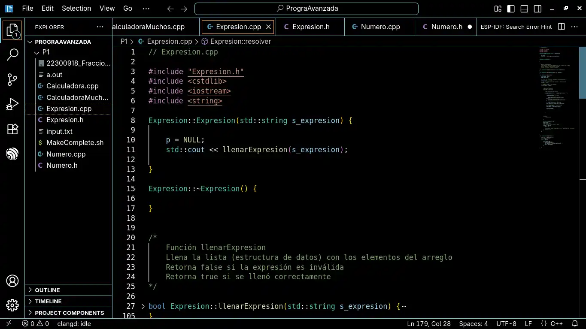
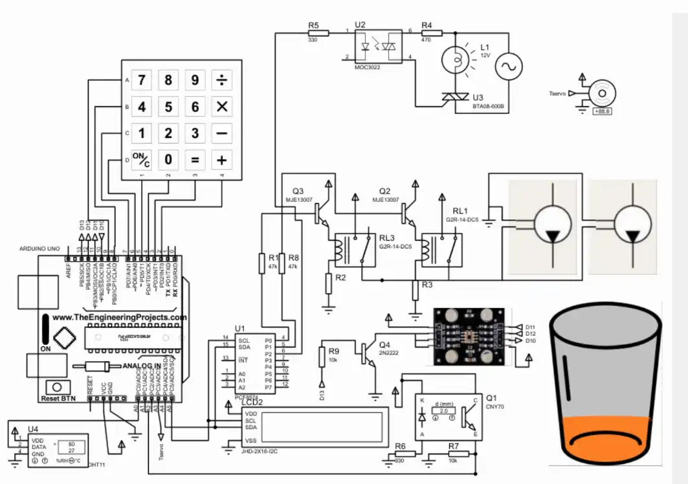
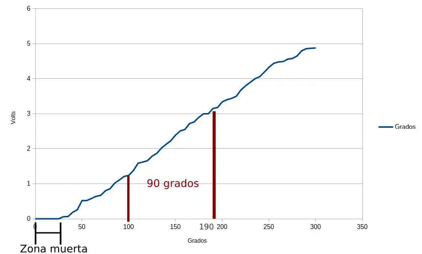
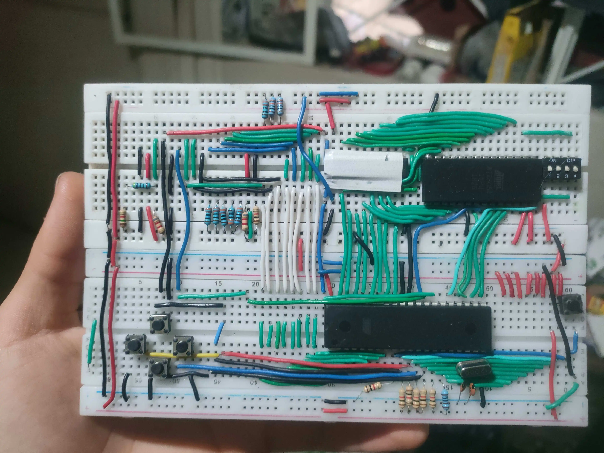
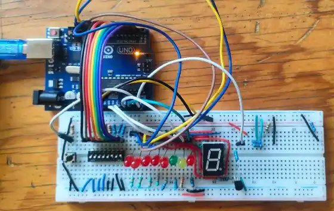
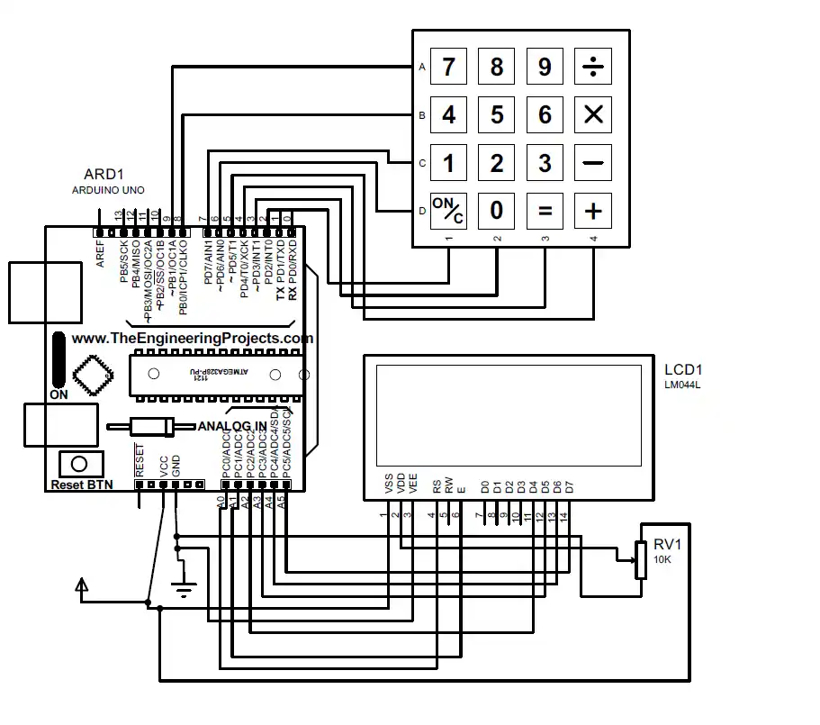

Adro Yael Ornelas Ornelas
18 años
Juan Álvarez 341 Z
7B1
Tecnólogo en Desarrollo de Software
Formación académica
Kinder en Colegio Erik Erikson
Escuela primaria en Escuela Normal Occidental E.N.O.
Escuela secundaria en Mixta Juana de Asbaje #56
Inglés en Top Learning
Alemán en UAG
Bachillerato tecnológico (tecnólogo de desarrollo en software) en Centro de Enseñanza Técnica Industrial CETI
Experiencia laboral
Fundamentos de electrónica
Electrónica analógica
Electrónica digital
Programación básica
Programación media
C/C++
Java
Linux
Arch Linux!!!
GitHub
Sistemas embebidos
Programación móvil
Infraestructura de redes
Portafolio
 
 
 